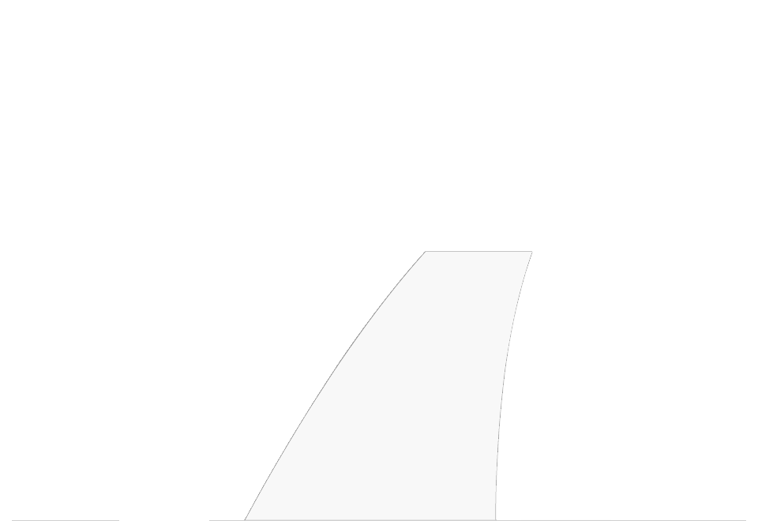
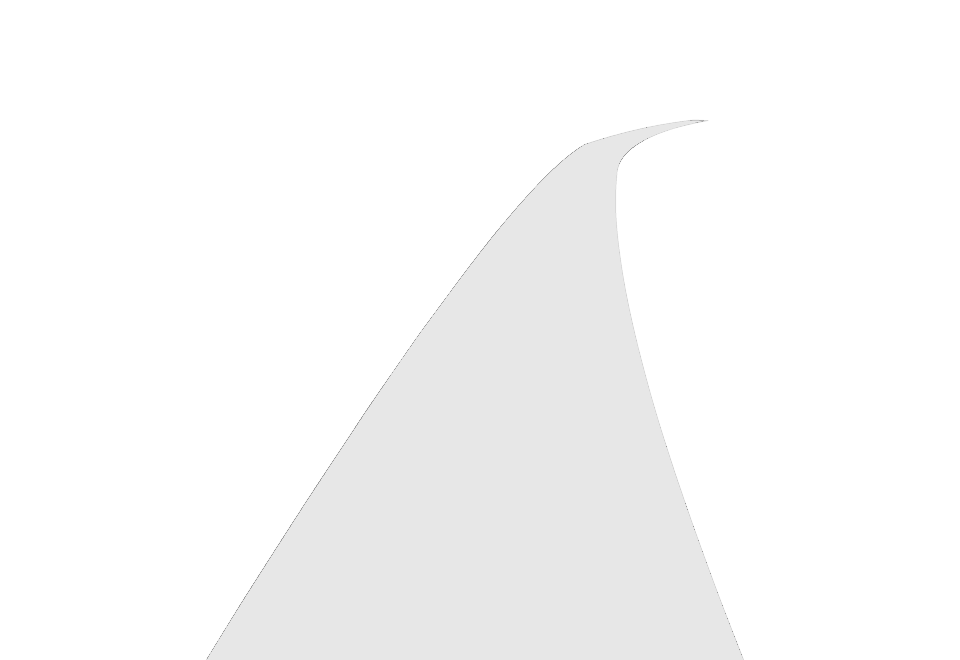
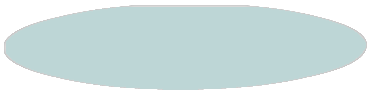
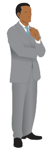
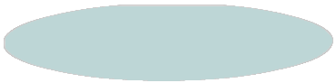

A2J Steps
Steps show the user progress to the courthouse. There are 7 layouts in A2J Author.
For now just do 2 steps.. First shows 1 step (the final step). Last is showing 2 steps. If there are more than 2 steps, just show the current and next.
Scripted Steps
scripted step will appear here:
Templates
1 Step


12
Congratulations. You have completed this interview!
2 Steps



12
Congratulations. You have completed this interview!
1
Welcome!